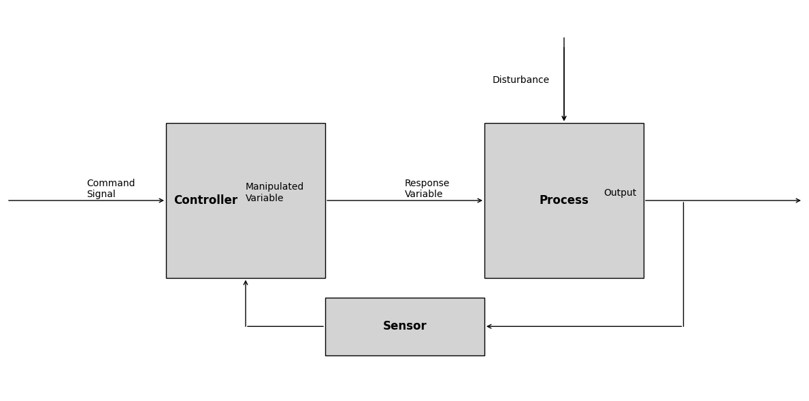

import numpy as np
import matplotlib.pyplot as pltPrincipi di controllo automatico
Benvenuti al corso sui Principi del Controllo Automatico. In questa serie di notebook Jupyter interattivi, approfondiremo i principi, i concetti e le terminologie fondamentali utilizzati nel campo dell’ingegneria dei controlli.
Introduzione ai sistemi di controllo
L’ingegneria di controllo o l’ingegneria dei sistemi di controllo si occupa della progettazione di sistemi in modo che si comportino nel modo desiderato. Oggi i sistemi di controllo sono parte integrante della nostra vita quotidiana e hanno una vasta gamma di applicazioni.
Terminologia del sistema di controllo
Nelle nostre discussioni iniziali, ci concentreremo sulle terminologie utilizzate nei sistemi di controllo. È fondamentale acquisire familiarità con questi termini per avere una chiara comprensione degli argomenti successivi.
Cominciamo!
Importanza dei sistemi di controllo
La civiltà moderna ha ampiamente beneficiato dei progressi nell’ingegneria dei controlli. Dagli elettrodomestici come frigoriferi, condizionatori e sistemi di riscaldamento alle configurazioni avanzate nelle industrie, nella tecnologia spaziale, nella robotica e nei sistemi d’arma, l’ingegneria di controllo gioca un ruolo fondamentale.
Inserisci immagine: un collage che mostra vari sistemi e settori in cui viene applicata l’ingegneria di controllo.
La teoria del controllo del feedback, su cui ci concentreremo in questo corso, viene utilizzata anche nel controllo delle scorte e nei sistemi socioeconomici. Anche se il nostro focus principale sarà sui sistemi ingegneristici, è essenziale notare che i sistemi socioeconomici e biologici rientrano nella cibernetica, che non sarà discussa approfonditamente in questo corso.
Terminologie di base dei sistemi di controllo
Prima di andare avanti, definiamo alcune delle terminologie di base utilizzate nei sistemi di controllo:
Processo/Impianto/Sistema Controllato: il sistema primario che miriamo a controllare. Può trattarsi di qualsiasi sistema, macchina o processo che necessita di controllo automatizzato. Ad esempio, in settori come quello chimico, petrolifero ed energetico, esistono applicazioni specifiche che richiedono il controllo di temperatura, umidità, pressione, ecc. Queste applicazioni vengono spesso definite “applicazioni di controllo di processo”.
Variabile di risposta: l’output o la variabile del processo che intendiamo controllare.
Variabile manipolata: la variabile che regoliamo o controlliamo per influenzare la variabile di risposta.
Controller: Un’entità che regola la variabile manipolata in base all’output desiderato.
Disturbo: qualsiasi cambiamento indesiderato o imprevisto nel sistema che può influenzare la variabile di risposta. Può avere origine esternamente o internamente al processo.
Il seguente codice Python mostra un semplice grafico di come un disturbo può influenzare l’output se non gestito.
# Define the time and system parameters
time = np.linspace(0, 10, 1000)
system_output_without_disturbance = np.sin(time)
disturbance = np.random.normal(0, 0.5, len(time))
system_output_with_disturbance = system_output_without_disturbance + disturbance
# Plotting
plt.figure(figsize=(10, 6))
plt.plot(time, system_output_without_disturbance, label="Without Disturbance", linewidth=2)
plt.plot(time, system_output_with_disturbance, label="With Disturbance", linestyle="--", linewidth=2)
plt.xlabel("Time")
plt.ylabel("Output")
plt.title("Effect of Disturbance on System Output")
plt.legend()
plt.grid(True)
plt.show()
Storicamente, l’applicazione delle tecniche di controllo è iniziata con il controllo di processo, tipicamente intorno al periodo compreso tra il 1900 e il 1940. Durante la Seconda Guerra Mondiale si affermò la pressante necessità di piloti automatici di aerei, sistemi di posizionamento dei cannoni, radar, sistemi di controllo delle antenne, che portò allo sviluppo della teoria dei servomeccanismi. Il termine “servomeccanismo” deriva da “servo” che significa schiavo o servitore, indicando un sistema che obbedisce ad un comando, indispensabile durante la guerra.
Con la convergenza di varie teorie, è emersa una teoria del controllo del feedback unificato, che comprende diversi sottocampi.
Rappresentazione del diagramma a blocchi
Per comprendere come funziona un sistema di controllo di base, è utile utilizzare una rappresentazione in diagramma a blocchi.

|
Figura: diagramma a blocchi che rappresenta la struttura del sistema di controllo di base e i suoi componenti e segnali principali.
import matplotlib.pyplot as plt
import matplotlib.patches as patches
# Create a figure and axis
fig, ax = plt.subplots(figsize=(12, 6))
# Create rectangles for blocks
process_rect = patches.Rectangle((0.6, 0.3), 0.2, 0.4, edgecolor='black', facecolor='lightgray', label="Process")
controller_rect = patches.Rectangle((0.2, 0.3), 0.2, 0.4, edgecolor='black', facecolor='lightgray', label="Controller")
# Add rectangles to the axis
ax.add_patch(process_rect)
ax.add_patch(controller_rect)
# Text inside the blocks
ax.text(0.25, 0.5, 'Controller', horizontalalignment='center', verticalalignment='center', fontsize=12, fontweight='bold')
ax.text(0.7, 0.5, 'Process', horizontalalignment='center', verticalalignment='center', fontsize=12, fontweight='bold')
# Add arrows using annotate
ax.annotate("", xy=(0.2, 0.5), xytext=(0, 0.5), arrowprops=dict(arrowstyle="->"))
# ax.annotate("", xy=(0.4, 0.5), xytext=(0.2, 0.5), arrowprops=dict(arrowstyle="->"))
ax.annotate("", xy=(0.6, 0.5), xytext=(0.4, 0.5), arrowprops=dict(arrowstyle="->"))
# ax.annotate("", xy=(0.8, 0.5), xytext=(0.6, 0.5), arrowprops=dict(arrowstyle="->"))
ax.annotate("", xy=(1, 0.5), xytext=(0.8, 0.5), arrowprops=dict(arrowstyle="->"))
ax.annotate("", xy=(0.7, 0.7), xytext=(0.7, 0.9), arrowprops=dict(arrowstyle="->"))
# Text for arrows
ax.text(0.1, 0.53, 'Command\nSignal', verticalalignment='center', fontsize=10)
ax.text(0.3, 0.52, 'Manipulated\nVariable', verticalalignment='center', fontsize=10)
ax.text(0.5, 0.53, 'Response\nVariable', verticalalignment='center', fontsize=10)
ax.text(0.75, 0.52, 'Output', verticalalignment='center', fontsize=10)
ax.text(0.61, 0.8, 'Disturbance', verticalalignment='center', fontsize=10)
# Set the limits, remove the axes and display
ax.set_xlim(0, 1)
ax.set_ylim(0, 1)
ax.axis('off')
plt.tight_layout()
plt.show()
Controllo ad anello aperto
In uno scenario ideale, il controller garantisce che la variabile di risposta segua i comandi del sistema, indipendentemente da eventuali disturbi. La struttura di controllo in cui il circuito non è chiuso e il controller dispone solo delle informazioni del segnale di comando, è definita “controllo ad anello aperto”.
Tuttavia, un tale sistema può essere vulnerabile ai disturbi. Se un disturbo casuale colpisce il sistema e il controller non è a conoscenza di questo cambiamento, potrebbe non riuscire a far sì che la variabile di risposta segua il comando.
Per affrontare questo problema, viene utilizzato un sistema più intelligente, noto come sistema di “controllo a circuito chiuso”. Qui, il controller riceve feedback dalla variabile di risposta, consentendogli di regolare la variabile manipolata in tempo reale e garantendo che l’uscita segua da vicino il comando, anche quando si verificano disturbi.
I sistemi di controllo del feedback svolgono un ruolo fondamentale in vari ambiti. Questi sistemi utilizzano un segnale di errore per produrre un segnale di controllo adatto, che a sua volta viene utilizzato per manipolare il segnale di ingresso all’impianto, minimizzando l’errore. L’obiettivo primario è ridurre la differenza tra il comando desiderato e l’output effettivo. Questo capitolo approfondisce le complessità del sistema di controllo del feedback e fa luce sulle sfide, i vantaggi e i metodi ad esso associati.
Diagramma: un diagramma a blocchi che mostra il sistema di controllo a circuito chiuso. La nuova struttura dovrebbe illustrare il feedback dalla variabile di risposta al controller.

|
import matplotlib.pyplot as plt
import matplotlib.patches as patches
# Create a figure and axis
fig, ax = plt.subplots(figsize=(12, 6))
# Create rectangles for blocks
process_rect = patches.Rectangle((0.6, 0.3), 0.2, 0.4, edgecolor='black', facecolor='lightgray', label="Process")
controller_rect = patches.Rectangle((0.2, 0.3), 0.2, 0.4, edgecolor='black', facecolor='lightgray', label="Controller")
sensor_rect = patches.Rectangle((0.4, 0.1), 0.2, 0.15, edgecolor='black', facecolor='lightgray', label="Sensor")
# Add rectangles to the axis
ax.add_patch(process_rect)
ax.add_patch(controller_rect)
ax.add_patch(sensor_rect)
# Text inside the blocks
ax.text(0.25, 0.5, 'Controller', horizontalalignment='center', verticalalignment='center', fontsize=12, fontweight='bold')
ax.text(0.7, 0.5, 'Process', horizontalalignment='center', verticalalignment='center', fontsize=12, fontweight='bold')
ax.text(0.5, 0.175, 'Sensor', horizontalalignment='center', verticalalignment='center', fontsize=12, fontweight='bold')
# Add arrows using annotate
ax.annotate("", xy=(0.2, 0.5), xytext=(0, 0.5), arrowprops=dict(arrowstyle="->"))
ax.annotate("", xy=(0.6, 0.5), xytext=(0.4, 0.5), arrowprops=dict(arrowstyle="->"))
ax.annotate("", xy=(1, 0.5), xytext=(0.8, 0.5), arrowprops=dict(arrowstyle="->"))
ax.annotate("", xy=(0.7, 0.7), xytext=(0.7, 0.9), arrowprops=dict(arrowstyle="->"))
ax.annotate("", xy=(0.7, 0.7), xytext=(0.7, 0.925), arrowprops=dict(arrowstyle="->"))
ax.annotate("", xy=(0.85, 0.17), xytext=(0.85, 0.5), arrowprops=dict(arrowstyle="-"))
ax.annotate("", xy=(0.6, 0.175), xytext=(0.85, 0.175), arrowprops=dict(arrowstyle="->"))
ax.annotate("", xy=(0.3, 0.175), xytext=(0.4, 0.175), arrowprops=dict(arrowstyle="-"))
ax.annotate("", xy=(0.3, 0.17), xytext=(0.3, 0.3), arrowprops=dict(arrowstyle="<-"))
# Text for arrows
ax.text(0.1, 0.53, 'Command\nSignal', verticalalignment='center', fontsize=10)
ax.text(0.3, 0.52, 'Manipulated\nVariable', verticalalignment='center', fontsize=10)
ax.text(0.5, 0.53, 'Response\nVariable', verticalalignment='center', fontsize=10)
ax.text(0.75, 0.52, 'Output', verticalalignment='center', fontsize=10)
ax.text(0.61, 0.81, 'Disturbance', verticalalignment='center', fontsize=10)
# ax.text(0.43, 0.62, 'Feedback', verticalalignment='center', fontsize=10)
# Set the limits, remove the axes and display
ax.set_xlim(0, 1)
ax.set_ylim(0, 1)
ax.axis('off')
plt.tight_layout()
plt.show()
Struttura dei sistemi di controllo del feedback
Il meccanismo di un sistema di controllo del feedback è un processo di autoannullamento dell’errore. Il sistema verifica continuamente la presenza di discrepanze tra il comando desiderato e l’output effettivo, impiegando azioni del controller per mitigare questi errori. Un sistema di questo tipo è comunemente noto come sistema a circuito chiuso a causa della sua struttura ad anello, che facilita il processo di feedback.
I componenti di questo sistema possono essere intesi come segue:
- Segnale di comando: l’uscita o il setpoint desiderato.
- Variabile controllata: l’output effettivo del sistema.
- Segnale di errore: differenza tra il segnale di comando e la variabile controllata.
- Controller: elabora il segnale di errore per produrre il segnale di controllo.
- Impianto: L’effettivo sistema controllato.
- Sensore: misura la potenza dell’impianto
Sfide nel sistema di controllo del feedback
Limitazioni del sensore: Una delle principali fonti di problemi nel sistema di controllo del feedback è il sensore. L’inclusione del sensore, assente nei sistemi a circuito aperto, presenta una serie di problemi:
- Rumore: Il sensore potrebbe introdurre rumore, soprattutto alle alte frequenze, durante la misurazione. Questo rumore può disturbare il corretto funzionamento dell’impianto e del controllore, riducendo così l’efficienza del sistema.
- Soluzioni al rumore: l’installazione di filtri antirumore adeguati può risolvere questo problema, garantendo che il rumore ad alta frequenza non interferisca con il funzionamento del circuito.
Requisiti del controller: Un aspetto significativo del sistema di feedback è il suo controllore. Lo scopo principale del controller è rendere il sistema robusto. Un sistema robusto implica che la variabile controllata segua fedelmente il segnale di comando, anche in presenza di disturbi esterni o variazioni dei parametri dell’impianto. Per raggiungere questo obiettivo è necessario un attento equilibrio tra accuratezza e stabilità del sistema, un delicato compromesso che costituisce il nucleo della teoria del controllo del feedback.
Preoccupazioni per la stabilità: Mentre ci impegniamo per una maggiore precisione del sistema, la stabilità potrebbe essere compromessa. Questo compromesso è una sfida intrinseca della struttura del feedback. La teoria del controllo del feedback e i suoi progetti mirano a trovare un equilibrio tra questi requisiti contrastanti.
Vantaggi del controllo del feedback
I sistemi di controllo del feedback sono indispensabili, principalmente a causa della loro natura robusta. Nonostante le sfide associate, la loro capacità di filtrare i disturbi e adattarsi alle variazioni dei parametri li rende superiori ai sistemi a circuito aperto. Senza strutture di controllo del feedback, sarebbe difficile ottenere in modo efficace la precisione del sistema.
Esempio
import numpy as np
import matplotlib.pyplot as plt
from scipy.integrate import odeintdef open_loop_system(y, t, K, tau):
"""Open-loop system model."""
u = 1 # step input
if 3 <= t <= 8: # Adding a disturbance between time 3 and 5
u += 1.0
dydt = (-y + K * u) / tau
return dydt
def closed_loop_system(states, t, K, tau, Ki, Kd):
"""Closed-loop system model with PID control."""
y, e_prev, e_int = states # y is system output, e_prev is previous error, e_int is integral of error
setpoint = 1 # desired setpoint
disturbance = 0
if 3 <= t <= 5: # Adding a disturbance between time 3 and 5
disturbance += 1.0
# Error
e = setpoint - y
# PID Controller
u = K * e + Ki * e_int + Kd * (e - e_prev)
dydt = (-y + u + disturbance) / tau # Disturbance is added directly to the system dynamics
deintdt = e # Integral of error over time
dedt = e - e_prev
return [dydt, dedt, deintdt]
# System parameters
K = 2.5
tau = 1.0
Ki = 1.0 # Integral gain
Kd = 0.5 # Derivative gain
# Time array
t = np.linspace(0, 10, 100)
# Solve ODE for the open-loop system
y_open = odeint(open_loop_system, 0, t, args=(K, tau))
error_open = 1 - y_open.squeeze() # desired setpoint is 1, so error is 1 - output
# Solve ODE for the closed-loop system
initial_conditions = [0, 0, 0] # initial values for y, e_prev, and e_int
y_closed, error_closed, _ = odeint(closed_loop_system, initial_conditions, t, args=(K, tau, Ki, Kd)).T
# Plot Responses
plt.figure(figsize=(10,6))
plt.subplot(2, 1, 1)
plt.plot(t, y_closed, 'r-', label='Closed-loop Response (PID)')
plt.plot(t, y_open, 'b--', label='Open-loop Response')
plt.ylabel('Response')
plt.title('Control System Response with Disturbance')
plt.legend()
plt.grid()
# Plot Errors
plt.subplot(2, 1, 2)
plt.plot(t, error_closed, 'r-', label='Closed-loop Error (PID)')
plt.plot(t, error_open, 'b--', label='Open-loop Error')
plt.xlabel('Time')
plt.ylabel('Error')
plt.title('Control System Errors with Disturbance')
plt.legend()
plt.grid()
plt.tight_layout()
plt.show()
Il sistema che stiamo simulando è un sistema base del primo ordine. È uno dei sistemi dinamici più semplici, utilizzato spesso come elemento fondamentale nella teoria del controllo. Le equazioni che governano la sua dinamica, in generale, assomigliano a:
\[ \tau \frac{dy(t)}{dt} + y(t) = Ku(t) \]
Qui: - \(\tau\) è la costante di tempo del sistema. Dà un’idea della velocità con cui il sistema risponde ai cambiamenti nell’input. - \(K\) è il guadagno del sistema. Ti dice quanto cambia l’output del sistema per una determinata modifica nell’input. - \(u(t)\) è l’input del sistema al tempo \(t\). - \(y(t)\) è l’output del sistema al tempo \(t\).
Il sistema ad anello aperto agisce direttamente sul sistema con l’ingresso \(u(t)\). Non c’è feedback, quindi se c’è un disturbo o il sistema non si comporta come previsto, il sistema a circuito aperto non può correggerlo.
Il sistema a circuito chiuso, invece, utilizza il feedback. L’uscita del sistema \(y(t)\) viene costantemente misurata e confrontata con il setpoint desiderato per determinare l’errore. Un controller regola quindi l’ingresso del sistema \(u(t)\) in base a questo errore per far sì che l’uscita del sistema corrisponda al setpoint desiderato. Ciò consente al sistema a circuito chiuso di correggere i disturbi e il comportamento del sistema che si discosta dal comportamento desiderato.
Nella nostra simulazione specifica: - Il sistema ad anello aperto è stato modellato per mostrare come reagisce direttamente a un input e ad un disturbo senza alcun meccanismo di feedback. - Il sistema a circuito chiuso è stato modellato utilizzando un semplice controllore proporzionale con un termine derivativo. Il controller cerca di minimizzare l’errore, che è la differenza tra l’uscita desiderata (setpoint + disturbo) e l’uscita effettiva del sistema. Ciò consente al sistema a circuito chiuso di correggere eventuali disturbi o altri comportamenti imprevisti.
Con questo meccanismo di feedback, il controller può regolare e correggere dinamicamente eventuali deviazioni, garantendo che il sistema rimanga stabile e funzioni come desiderato.
Approcci progettuali per sistemi di controllo feedback
Progettare un controller efficace è fondamentale. Esistono vari approcci a questo proposito e possono essere classificati come segue:
- Approccio sperimentale: si basa sull’esperienza pratica. Viene installato un controller basato sulle esperienze passate e quindi regolato in tempo reale fino al raggiungimento dei risultati desiderati. Questo metodo, denominato regolazione del controller, è ad hoc ed è ampiamente utilizzato nelle applicazioni di controllo di processo.
- Approccio basato su modelli o analitico: per i sistemi complessi in cui i requisiti di controllo sono rigorosi, un approccio basato su modelli è più adatto. Qui la dinamica del sistema viene catturata in un modello matematico, che viene poi utilizzato per progettare analiticamente il controller.
- Approccio basato sulla conoscenza: questo approccio sta guadagnando terreno, con sviluppi significativi nell’ultimo decennio. Metodi come controllo esperto, controllo fuzzy, reti neurali, apprendimento per rinforzo rientrano in questa categoria. L’idea centrale è quella di utilizzare linee guida qualitative o regole derivate dalla conoscenza degli esperti per progettare il controller.
Nell’ambito di questo corso, ci concentreremo principalmente sul controllo basato su modelli. Ciò comporta la derivazione di un modello matematico del sistema fisico, che può essere basato su leggi fisiche o sperimentazione.
Contesto storico:
L’evoluzione dei metodi di progettazione del controllo può essere sostanzialmente classificata in due epoche principali:
- Progettazione classica dei controlli (1940-1960): questo periodo ha visto lo sviluppo di metodi di progettazione nel dominio della frequenza. Sono emerse tecniche come i metodi di stabilità di Nyquist, i grafici di Bode e i grafici del luogo delle radici. Sono ancora molto utilizzati, soprattutto nelle applicazioni di controllo industriale.
- Modern Control Design (dagli anni ’60 in poi): i requisiti di controllo dei veicoli spaziali hanno dato vita a tecniche di stato-spazio, note come Modern Control Design. Sebbene questi metodi siano definiti “moderni”, è fondamentale comprendere che sia i metodi classici che quelli moderni sono ancora prevalenti e fondamentali nelle rispettive applicazioni.
Il termine “progettazione di controlli moderna” potrebbe essere un po’ fuorviante. È emerso principalmente dai requisiti specifici del tracciamento nei veicoli spaziali. Tuttavia, nel campo del controllo industriale, i metodi classici di progettazione sono ancora ampiamente prevalenti. Infatti, circa il 75% degli odierni problemi di controllo industriale vengono affrontati utilizzando queste tecniche classiche.
Sebbene i metodi moderni abbiano le loro origini e i loro vantaggi, in particolare in applicazioni specializzate come i veicoli spaziali, è ancora discutibile quale metodo offra maggiore robustezza. La robustezza, dopo tutto, è il requisito primario per la maggior parte dei sistemi.
Questo dibattito in corso rende imperativo rinunciare alla terminologia del controllo classico e moderno, poiché entrambi sono ugualmente rilevanti a seconda dell’applicazione.
Nell’ambito di questo corso, la nostra concentrazione principale sarà sui metodi di progettazione nel dominio della frequenza. Ciò ti fornirà una comprensione completa dei metodi fondamentali nella progettazione dei controlli.
Tuttavia, non trascureremo del tutto i metodi delle variabili di stato. Verranno invece introdotti non dal punto di vista della progettazione ma piuttosto per la simulazione del sistema. La simulazione del sistema, se affrontata attraverso la formulazione delle variabili di stato, può essere più intuitiva ed efficace.
Esempi illustrativi di sistemi di controllo
Spesso è utile mettere in relazione i concetti teorici con esempi del mondo reale. Ciò aiuta a comprendere le applicazioni più ampie e le sfumature dei sistemi di controllo nella vita di tutti i giorni.
Esempi di sistemi controllati:
- Serbatoio del WC del bagno: un sistema apparentemente semplice, ma in sostanza è un meccanismo di controllo a feedback.
- Guida automobilistica: comprende vari sistemi di controllo, dalla regolazione della velocità al servosterzo.
- Riscaldamento residenziale: i termostati e i sistemi HVAC si affidano al feedback per mantenere le temperature desiderate.
- Meccanismo di sterzo idraulico: un componente critico per molti veicoli e sistemi pesanti.
- Servosistema antenna: utilizzato per il monitoraggio e le comunicazioni.
- Sistema di controllo della velocità: presente in varie macchine, dalle installazioni industriali agli elettrodomestici.
[Inserisci un collage o una serie di immagini che illustrino gli esempi precedenti.]
Figura 3: esempi reali di sistemi di controllo.
Conclusioni
I sistemi di controllo del feedback costituiscono la spina dorsale di molte applicazioni ingegneristiche moderne. La capacità di fornire un meccanismo per regolare automaticamente il comportamento del sistema in base al feedback degli output rende questi sistemi indispensabili. Tuttavia, la progettazione e l’implementazione di questi sistemi richiedono una comprensione completa della loro struttura, delle sfide, dei vantaggi e dei vari approcci disponibili. Nei capitoli successivi approfondiremo ciascuno di questi aspetti, fornendo uno sguardo più dettagliato alle complessità dei sistemi di controllo del feedback.